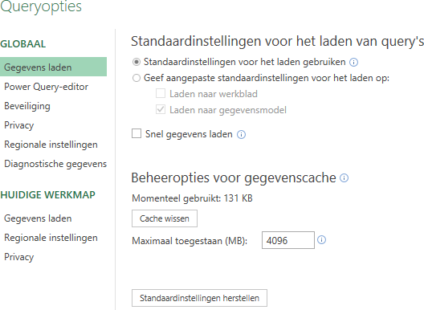

Archief Ben
Home
Access
Excel
Bier
Chemie
Wiskunde
R
Divers
Tutorials
Categorieën
Alle
(16)
export
(1)
functies
(5)
getallen
(3)
grafieken
(2)
powerquery
(4)
statistiek
(4)
xml
(1)
Excel
Artikelen over Excel.
Sorteer op
Standaard
Titel
Datum - Oudste
Datum - Nieuwste
Gestapelde data structureren - deel 2
powerquery
Vervolg op het transformeren van gestapelde data in één kolom naar tabelvorm.
20 okt 2022
Gestapelde data structureren - deel 1
powerquery
Gestapelde data in één kolom transformeren naar tabelvorm.
18 okt 2022
IS functies
functies
Met IS functies de waarde in een cel controleren.
4 aug 2022
Reeks getallen genereren
getallen
functies
Een matrix met (opeenvolgende) getallen genereren met de functie REEKS.
15 mrt 2022
Powerquery en Landinstellingen
powerquery
Het gebruik van landinstellingen bij het importeren van platte bestanden (.csv).
14 mrt 2022
Complexe getallen in Excel
getallen
Excel functies voor het werken met complexe getallen.
1 mrt 2022
Converteren van eenheden
functies
Met de Excel formule CONVERTEREN kun je eenvoudig Engelstalige eenheden omrekenen naar andere eenheden.
22 feb 2022
Kwartaal uit datum
functies
Formules om het kwartaalnummer uit een datum te halen.
28 jan 2022
Matrixbewerkingen in Excel
getallen
Het werken met matrices (arrays) in Excel.
21 mei 2021
Aselecte getallen
statistiek
Over hoe willekeurige getallen kunt genereren in Excel.
17 mei 2020
Histogrammen (deel 1)
grafieken
statistiek
Hoe je frequentieverdelingen in Excel maakt.
13 mei 2020
Histogrammen (deel 2)
grafieken
statistiek
Hoe je frequentieverdelingen en histogrammen in Excel maakt.
13 mei 2020
Exceldata naar xml exporteren
export
xml
Gegevens in een Excel tabel exporteren naar een XML bestand.
1 mrt 2020
Functienamen van Excel vertalen
functies
Addin voor Excel om functienamen te vertalen.
31 jul 2019

Power Query Opties
powerquery
Opties voor Power Query in Excel.
18 nov 2018
Beperkingen Excel voor statistisch gebruik
statistiek
Statistische mogelijkheden in Excel en de beperkingen hierbij.
24 dec 2012
Geen overeenkomsten